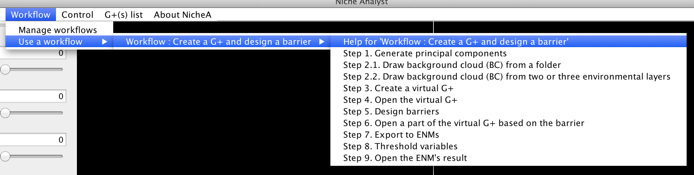
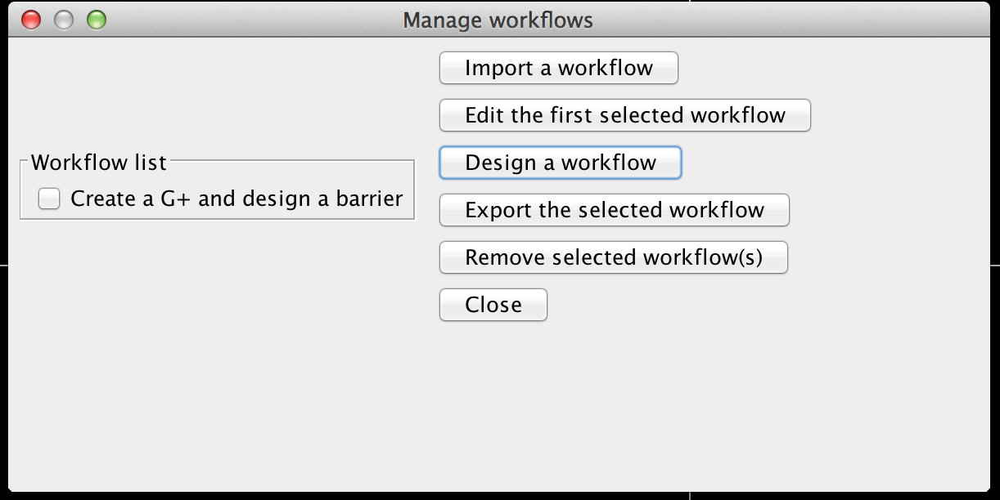
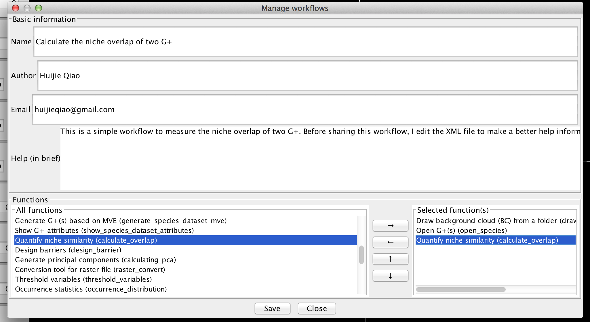
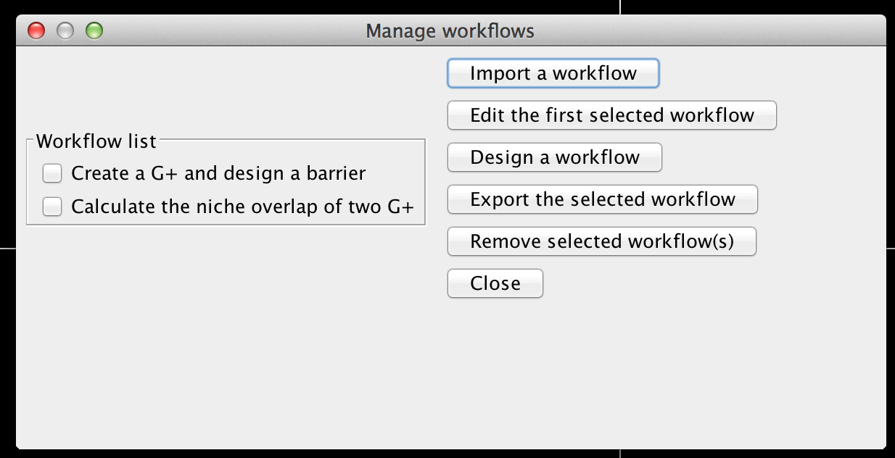
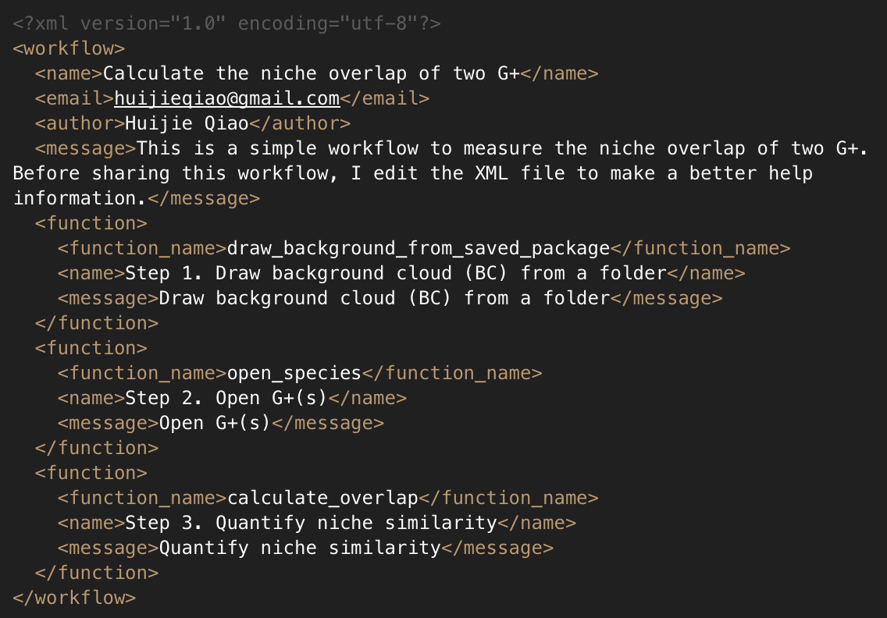
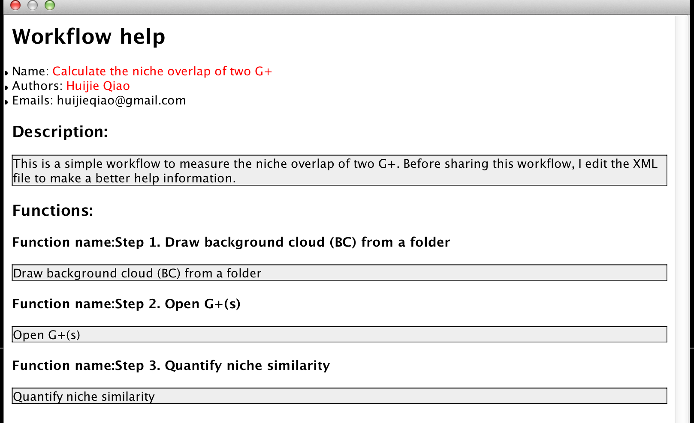

Scientific workflow in NicheA
A scientific workflow system is a specialized form of a workflow management system designed specifically to compose and execute a series of computational or data manipulation steps, or workflow, in a scientific application (From Wikipedia).
There are many motives for differentiating scientific workflows from traditional business process workflows. These include:
Based on the motives/requirements above, we designed a loosely structured scientific workflow system in NicheA. The users can carry through a completed analysis process for a specific purpose by following a workflow. The users can download the shared workflows. At the same time, the users can also design their own workflows, and share them with other scientists.
Note:
"A loosely structured scientific workflow system" means that the users can start the workflow from any step and skip any steps, rather than running a workflow from the very beginning, and following the flow strictly.
1. Using the built-in workflow.
In NicheA, we have a simple built-in workflow (Fig. 1). Following the workflow, you can create a BC, create a virtual N, design barriers for the generated N, export the created Ns to the specified format to model in the corresponding software (MaxEnt, openModeller or BIOMOD), calculate the threshold values to binarize the ENM's result, and open an ENM's result in NicheA.
For every workflow, there is a help message at the beginning of the submenu (Fig. 1)., which is marked as "Help for 'Workflow: WORKFLOW NAME'". After clicking the menu, you can read something about the workflow, including the author information, a brief introduction of the workflow, and a simple explanation for every step. When you invoke the step, the explanation for the step will appear before NicheA run the function.
Note:
Actually, a workflow is a group of reassembled functions in NicheA. Every step in a workflow can be found somewhere (File or Toolbox menu) in NicheA with a different name.

2. Create a new workflow by yourself.
By clicking  menu, you can find all the functions about the workflow (Fig. 2),
including:
menu, you can find all the functions about the workflow (Fig. 2),
including:

In this section, we will elaborate how to create a new workflow. First, we click the "Design a workflow" button in Fig.2.
In the popup dialog, you need to fill in some information of the workflow, select some functions from the list on the left to the right list
by clicking (Fig.3).
 and are used to
adjust the order of the functions in the right list. is used to remove the selected
function from the right list. After clicking the "Save" button, a new workflow will be saved into NicheA.
and are used to
adjust the order of the functions in the right list. is used to remove the selected
function from the right list. After clicking the "Save" button, a new workflow will be saved into NicheA.
Note:
After clicking "Close" button in Fig.3, the new workflow won't appear in the dialog in Fig.2 immediately. It will appear when you close the dialog in Fig.2 and reopen it (Fig.4).
The function of editing an existing workflow shares the same dialog (Fig.3) with the function of creating a new workflow. So no more tautology here.


3. Share the workflow with other scientists.
"Simplifying the process of sharing and reusing workflows between the scientists." is a very important feather for a scientific workflow system. In NicheA, you can use "Export the selected workflow" button in Fig.2 to export a workflow to a configure file with XML format, and send it to your colleague or share it on this page via send it to us.
After you receive a workflow configuration, or download a worflow, you can use "Import a workflow" button to import it to your NicheA.
4. Give more detailed information to a workflow.
Before you share your carefully crafted workflow, you might hope the users understanding all your ideas clearly. It is pity that NicheA provides a very simple user interface to descript a workflow. If you want to add more information to a workflow, you can open the configuration file in any text editor (Notepad for instance). What you need to do is editing the content between <name> ... </name> and <message> ... </message> tages (Fig. 5). The former is the name of the step, and the latter is the message/information/description of the step. After you edit the configuration file, you need to import and overwrite the existing workflow in your NicheA. Then you can get a fresh workflow with more informations. (Fig. 6)

